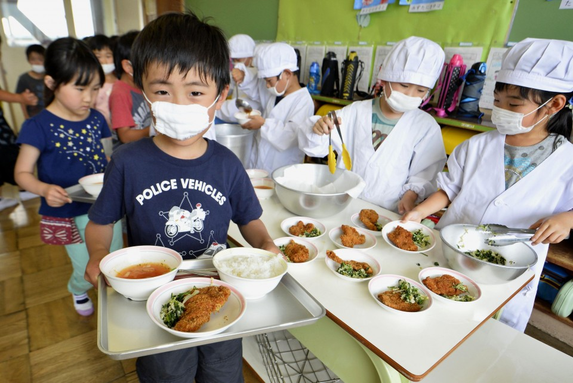
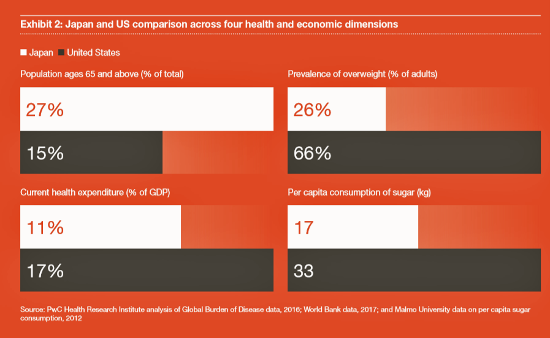
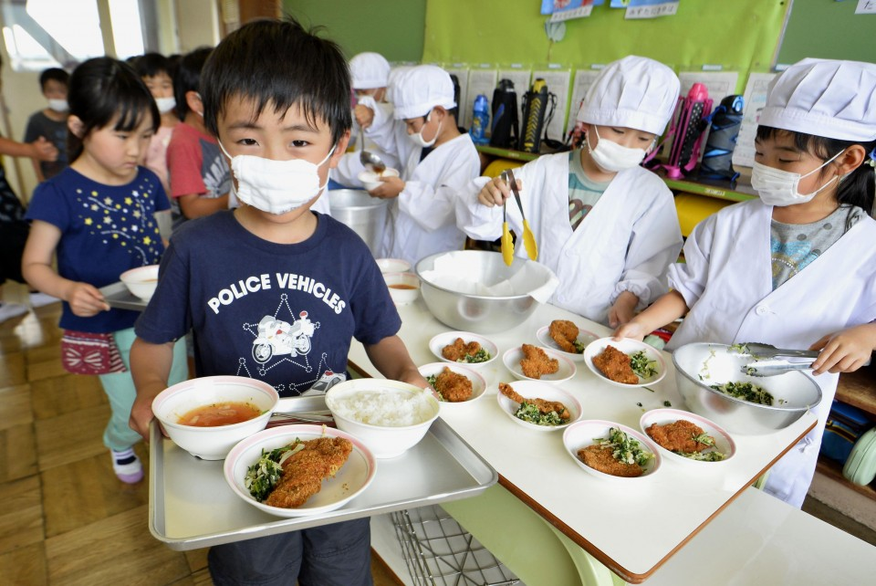
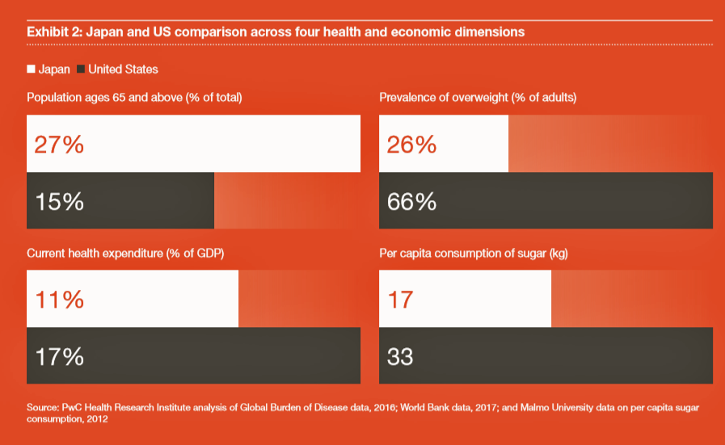

Japanese Longevity
Conclusion
Lessons from Japan's Health Success
Japan's exceptional health outcomes and remarkable life expectancy are the result of decades of deliberate investments in public health, healthcare systems, social structures, and cultural practices. After World War II, Japan faced severe challenges including widespread malnutrition, overcrowded housing, and high mortality from infectious diseases. The government responded by investing in sanitation, housing reconstruction, and public health infrastructure. Urban water and sewage systems were upgraded, waste management became more systematic, and overcrowding was reduced, directly decreasing disease risk and improving living conditions (Ikeda et al., 2011; Kondo, 2014; OECD, 2025).
Nutrition played a central role in recovery and long-term health. School lunch programs provided balanced meals, and national campaigns promoted breastfeeding and healthy diets. Children, pregnant women, and the elderly benefited the most, leading to lower mortality and stronger immunity against chronic diseases (Tsugane, 2021; Dower, 1999). These initiatives show the importance of combining structural improvements with targeted programs for vulnerable populations.
The expansion of disease prevention programs from the 1950s to the 1970s further strengthened public health. Nationwide vaccination campaigns, tuberculosis control, community screenings, and maternal-child health programs reduced preventable mortality and allowed for early treatment of chronic conditions (Reich et al., 2011; Ikeda et al., 2011; Kondo & MEJ Four Dimensional Health Innovation Group, 2022). Universal health coverage, introduced in 1961, ensured access to healthcare for all citizens and removed financial barriers that had previously delayed diagnosis and treatment (OECD, 2025; Reich et al., 2011).
Lifestyle factors and cultural practices have reinforced these systemic improvements. Traditional Japanese diets emphasize vegetables, fish, soy, and fermented foods, combined with small portion sizes. The practice of hara hachi bu, eating until 80 percent full, moderates caloric intake and supports metabolic health (Tsugane, 2021; Fukkoshi et al., 2015; Wang, 2016). Regular physical activity is embedded into daily routines through walking, cycling, and public transit use, supported by walkable urban design and access to green spaces (Koohsari & Sugiyama, 2019; OECD, 2019). Together, these habits reduce obesity, cardiovascular disease, diabetes, and age-related decline (Ikeda et al., 2012).
Behavioral risk reduction complements diet and exercise. Smoking rates in Japan have declined due to public health campaigns, and alcohol consumption is often moderated. Individuals who avoid tobacco and limit alcohol consumption experience significantly longer lifespans (Tamakoshi et al., 2010; Stellman et al., 2001; Ikeda et al., 2012). Preventive healthcare, including routine screenings and early monitoring for blood pressure, glucose, and cancer, allows timely interventions that reduce mortality from chronic conditions (Kondo & MEJ Four Dimensional Health Innovation Group, 2022; OECD, 2019).
Social cohesion and cultural attitudes provide additional support. Intergenerational family structures, community networks, and workplace wellness initiatives reduce stress, improve mental health, and encourage adherence to preventive measures (Murayama et al., 2020; Muramatsu et al., 2012). Public respect for medical guidance and collective responsibility reinforces the uptake of healthy behaviors and preventive care (RCS Corporation, 2024).
While genetics play a role, studies of centenarian populations, particularly in Okinawa, show that lifestyle, environment, and policy are more decisive in achieving longevity (Ikeda et al., 2011; Ikeda et al., 2012). Japan demonstrates that sustained improvements in population health are achieved not by medical technology alone but by combining systemic healthcare infrastructure, preventive policies, health literacy, cultural habits, and social support networks.
For Western countries, Japan offers several key lessons. First, preventive care should be prioritized alongside treatment, with investments in early screenings, vaccination programs, and community health initiatives. Second, diets emphasizing nutrient-rich, minimally processed foods and controlled portion sizes can reduce obesity and chronic disease. Third, urban planning and daily routines that promote physical activity can improve population health without expensive interventions. Fourth, integrating social support, education, and workplace wellness programs strengthens adherence to healthy behaviors. Finally, long-term planning and universal access to healthcare reduce inequities and improve resilience against public health crises (WHO, 2024; Costlow et al., 2024; Kaiser Family Foundation, 2025).
In summary, Japan's success illustrates that high life expectancy and low preventable disease rates are the result of coordinated, multi-sectoral approaches. By combining policy, culture, education, lifestyle, and social cohesion, Japan has created a resilient and healthy population. Western nations seeking to improve health outcomes can learn from Japan by emphasizing prevention, fostering healthy habits, supporting social structures, and ensuring equitable access to care.
 



Did You Know?
Japan's concept of "ikigai" (生きがい) meaning "the reason for being" is deeply embedded in their culture and contributes to longevity. Studies show that having a strong sense of purpose and waking up each day with meaningful goals is associated with lower mortality rates and better mental health outcomes among Japanese seniors. (Tanno et al., 2009)
Did you also know that I spent an absurd amount of time wrestling with these images because they refused to scale properly on smaller screens. After much suffering, I finally got them to work on everything from tiny phones to full-sized monitors, but honestly, it might have been faster to just force all screens to be the same size and be done with it.